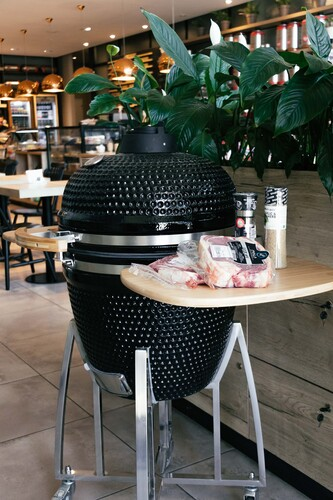
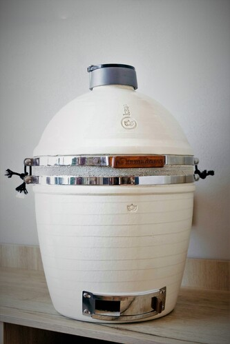
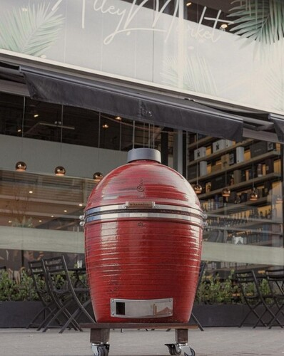

UNA MILENARIA FORMA DE ASAR
El kamado es un horno de barro de origen japonés que, por su técnica de cocción, aporta un sabor y un aroma distintivo y único del ahumado. Su variedad de tamaños lo hace ideal para adaptarlo a los distintos espacios como galerías y balcones. Para adquirir uno te invitamos al local para brindarte mas información o nos podes contactar por whatsapp.


